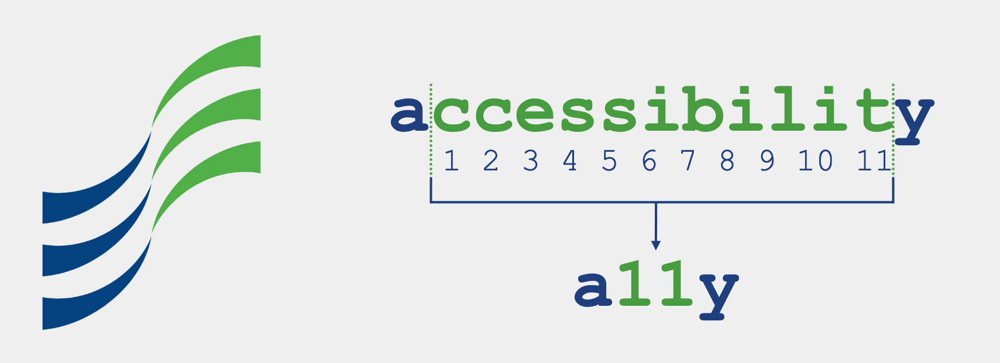
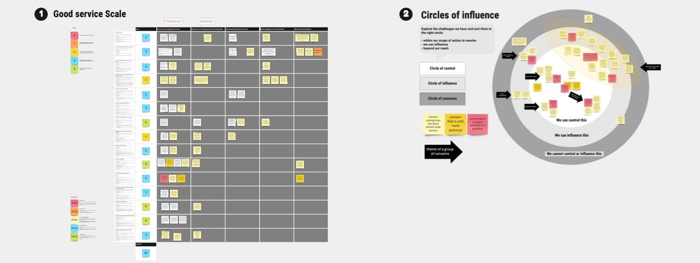
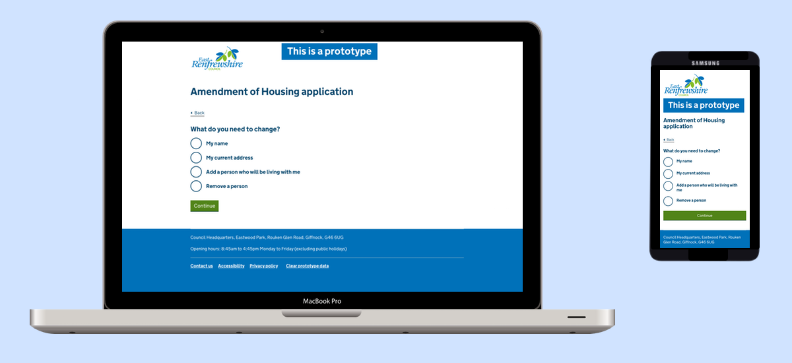
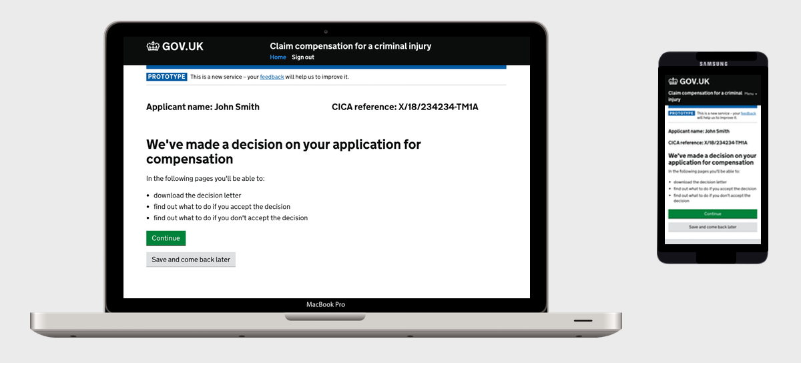

Work
Scottish Enterprise

I was working as a service designer but also part of the internal "Disability positive" group to improve our accessibility practice for both our customers and people working for Scottish Enterprise.
I've written some blog posts about it. For example:
- Accessibility – Sharing knowledge between organisations
- How we are improving accessibility in our practice

As a service designer, for every project, the most challenging was always advocating for a service design approach and for our users.
Learn more about my work at Scottish Enterprise
East Renfrewshire Council - Applying for Council housing

I introduced the GOV.UK ways of working and the prototype kit to code high fidelity prototypes of forms for user testing. This was a completely new way of working for the council teams.
In particular, we used it to design the online service to apply for Council Housing. Instead of simply translating 4 paper forms, into 4 online forms, I advocated to look at the whole service. Working with the Housing department and IT teams, we laid out the business needs and user needs of the 4 forms aiming to create a single view of the service, trying to optimise what and when we need to ask for user’s data to avoid duplication and improve the user's experience.
I led usability testing sessions with various participants including homeless people and refugees who were non native speakers. We refined the online forms and the associated new paper forms for non digital audiences.
This was a particularly complex service but the approach was well received. The prototype was a new visual and concrete way to collaborate between the digital team, IT and the department.
This was an ongoing project when I left in February 2019.
Learn more about my work at East Renfrewshire Council
CICA Online

We designed a new digital service to replace and improve the actual paper base one for the Criminal Injury Compensation Authority.
I started as a software developer at the discovery stage, but I mostly worked on user research and design until late in the private Beta stage (July 2016 - April 2018) in collaboration with the user researchers and a content designer.
I was in charge of coding the high fidelity prototypes, using the prototype kit provided by the Government Digital Service, following closely their guidelines to comply with the Digital by Default policy of the GOV.UK.
This was an ongoing project when I left in September 2018.
Learn more about my work on CICA online
Video Games - Knowledge base Wiki
While working as a Technical Customer Support representative for video games, I re-designed the knowledge base wiki we were using to answer customers either via phone or emails.
The existing wiki was under-used, not updated and a lot of sources of information were missing or disseminated among colleagues.
I reviewed the existing information, added to it and prepared a specific wiki section prior to the launch of a new game. As everyone agreed it had been a great tool to answer our customers efficiently on the week of the launch, I developed it further for other game launches.